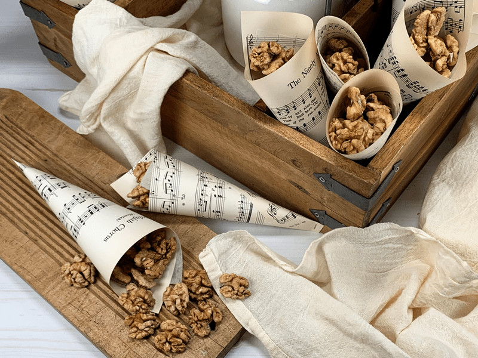
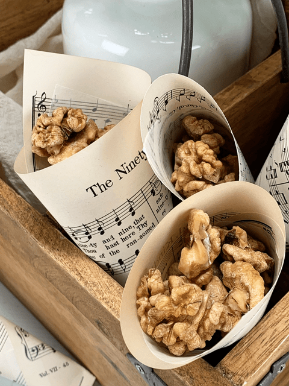

Candied Walnuts
This recipe for candied walnuts is simply walnut halves coated in a sweet and salty mixture then dehydrated to crispy and crunchy perfection. They are perfect for salads, snacking, or package them up for a fun homemade gift idea! Candied Walnuts are a healthier snack including vitamin E, healthy fats, and antioxidants. You won’t find that in M&M’s (just saying). Once you learn how to make them, you’ll be using them in all sorts of recipes.

This recipe is pretty darn straightforward – the soaked walnut halves were tossed and well coated in a sweet and salty dry mixture. The key is to make sure that you get the mixture into all the little nooks and crannies of those walnuts! In the past, I have made candied nuts, but I used a wet sweetener. That always led to nuts that were sticky and clumped together. Nothing inherently wrong with that but I was aiming for the dry-to-the-touch, kind of sweet treat.
Candied Walnuts are the ultimate sweet & salty snack!
This particular recipe was created for a dear friend of ours, Kevin. He loves sprouted walnuts, maple syrup, and salt. So, I decided to combine all three and make a real treat for him. Somewhere in my travels, I picked up some pure dehydrated maple syrup that doesn’t have any additives or preservatives. You can turn the powder into a syrup by mixing 3 tablespoons of powder with 1/2 tablespoon of hot water to make approximately 1/4 cup maple syrup. It isn’t raw because maple syrup itself isn’t raw. But it is a sweetener that I use from time to time.
I have learned over the years of running this site that sweeteners are very personal. Each person has their set of sweeteners that they use, so if this isn’t your cup of tea, that’s ok. Unlike highly processed white sugar, maple sugar contains naturally occurring minerals like potassium and calcium.
Other than the presoaking time of the nuts, this recipe mixes up pretty fast, and thankfully walnuts dry pretty darn quickly too. Much quicker than most nuts. Once they have been removed from the dehydrator and cooled, you will have a wonderful batch of candied walnuts to share with your belly or other bellies. So what do you say, shall we give this recipe a try? If you do, please comment below. I love hearing from you. blessings, amie sue
P.S. Please enjoy it as a treat. As with all sweets, even healthier ones, we need to watch our sugar intake.

Ingredients
yields 4 cups
Preparation
- Soak walnuts as indicated in the link provided above.
- Once they are done soaking, give them a rinse, and shake off the excess water.
- Place the wet nuts in a bowl or a ziplock bag (that’s what I did), stir or shake the walnuts until they are well coated with the dry mix.
- Sprinkle the walnuts out on the nonstick sheets that come with the dehydrator, making sure to spread them out.
- If you don’t have the nonstick sheets, you can use parchment paper. Do not use wax paper since foods tend to stick to it.
- Dehydrate at 145 degrees (F) for 1 hour, then reduce to 115 degrees (F) and continue to dry for 5+ hours (until dry).
- Store in a sealed glass jar for several weeks.
© AmieSue.com